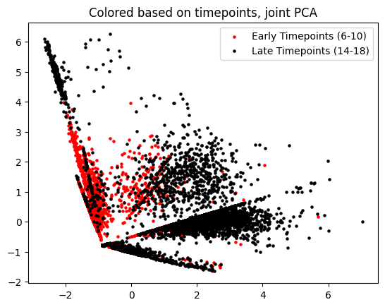
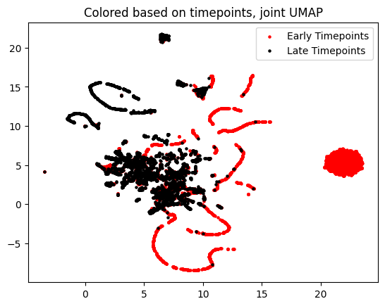

Time Series Experiment#
import torch
print('Torch version: {}'.format(torch.__version__))
print('CUDA available: {}'.format(torch.cuda.is_available()))
print('CUDA version: {}'.format(torch.version.cuda))
print('CUDNN version: {}'.format(torch.backends.cudnn.version()))
use_cuda = torch.cuda.is_available()
device = torch.device("cuda:0" if use_cuda else "cpu")
torch.backends.cudnn.benchmark=True
Torch version: 2.0.1
CUDA available: False
CUDA version: None
CUDNN version: None
import scanpy as sc
import numpy as np
import umap
import matplotlib.pyplot as plt
from sklearn.decomposition import PCA
adata = sc.read_h5ad("./data/sf4_rna2_06-18_combinedNeural_pca50_res0.6_raw_annotated.h5ad")
/Users/colinbaker/anaconda3/envs/scootr/lib/python3.9/site-packages/umap/distances.py:1063: NumbaDeprecationWarning: The 'nopython' keyword argument was not supplied to the 'numba.jit' decorator. The implicit default value for this argument is currently False, but it will be changed to True in Numba 0.59.0. See https://numba.readthedocs.io/en/stable/reference/deprecation.html#deprecation-of-object-mode-fall-back-behaviour-when-using-jit for details.
@numba.jit()
/Users/colinbaker/anaconda3/envs/scootr/lib/python3.9/site-packages/umap/distances.py:1071: NumbaDeprecationWarning: The 'nopython' keyword argument was not supplied to the 'numba.jit' decorator. The implicit default value for this argument is currently False, but it will be changed to True in Numba 0.59.0. See https://numba.readthedocs.io/en/stable/reference/deprecation.html#deprecation-of-object-mode-fall-back-behaviour-when-using-jit for details.
@numba.jit()
/Users/colinbaker/anaconda3/envs/scootr/lib/python3.9/site-packages/umap/distances.py:1086: NumbaDeprecationWarning: The 'nopython' keyword argument was not supplied to the 'numba.jit' decorator. The implicit default value for this argument is currently False, but it will be changed to True in Numba 0.59.0. See https://numba.readthedocs.io/en/stable/reference/deprecation.html#deprecation-of-object-mode-fall-back-behaviour-when-using-jit for details.
@numba.jit()
/Users/colinbaker/anaconda3/envs/scootr/lib/python3.9/site-packages/tqdm/auto.py:21: TqdmWarning: IProgress not found. Please update jupyter and ipywidgets. See https://ipywidgets.readthedocs.io/en/stable/user_install.html
from .autonotebook import tqdm as notebook_tqdm
/Users/colinbaker/anaconda3/envs/scootr/lib/python3.9/site-packages/umap/umap_.py:660: NumbaDeprecationWarning: The 'nopython' keyword argument was not supplied to the 'numba.jit' decorator. The implicit default value for this argument is currently False, but it will be changed to True in Numba 0.59.0. See https://numba.readthedocs.io/en/stable/reference/deprecation.html#deprecation-of-object-mode-fall-back-behaviour-when-using-jit for details.
@numba.jit()
---------------------------------------------------------------------------
FileNotFoundError Traceback (most recent call last)
Cell In[2], line 7
4 import matplotlib.pyplot as plt
5 from sklearn.decomposition import PCA
----> 7 adata = sc.read_h5ad("./data/sf4_rna2_06-18_combinedNeural_pca50_res0.6_raw_annotated.h5ad")
File ~/anaconda3/envs/scootr/lib/python3.9/site-packages/anndata/_io/h5ad.py:219, in read_h5ad(filename, backed, as_sparse, as_sparse_fmt, chunk_size)
211 raise NotImplementedError(
212 "Currently only `X` and `raw/X` can be read as sparse."
213 )
215 rdasp = partial(
216 read_dense_as_sparse, sparse_format=as_sparse_fmt, axis_chunk=chunk_size
217 )
--> 219 with h5py.File(filename, "r") as f:
221 def callback(func, elem_name: str, elem, iospec):
222 if iospec.encoding_type == "anndata" or elem_name.endswith("/"):
File ~/anaconda3/envs/scootr/lib/python3.9/site-packages/h5py/_hl/files.py:567, in File.__init__(self, name, mode, driver, libver, userblock_size, swmr, rdcc_nslots, rdcc_nbytes, rdcc_w0, track_order, fs_strategy, fs_persist, fs_threshold, fs_page_size, page_buf_size, min_meta_keep, min_raw_keep, locking, alignment_threshold, alignment_interval, meta_block_size, **kwds)
558 fapl = make_fapl(driver, libver, rdcc_nslots, rdcc_nbytes, rdcc_w0,
559 locking, page_buf_size, min_meta_keep, min_raw_keep,
560 alignment_threshold=alignment_threshold,
561 alignment_interval=alignment_interval,
562 meta_block_size=meta_block_size,
563 **kwds)
564 fcpl = make_fcpl(track_order=track_order, fs_strategy=fs_strategy,
565 fs_persist=fs_persist, fs_threshold=fs_threshold,
566 fs_page_size=fs_page_size)
--> 567 fid = make_fid(name, mode, userblock_size, fapl, fcpl, swmr=swmr)
569 if isinstance(libver, tuple):
570 self._libver = libver
File ~/anaconda3/envs/scootr/lib/python3.9/site-packages/h5py/_hl/files.py:231, in make_fid(name, mode, userblock_size, fapl, fcpl, swmr)
229 if swmr and swmr_support:
230 flags |= h5f.ACC_SWMR_READ
--> 231 fid = h5f.open(name, flags, fapl=fapl)
232 elif mode == 'r+':
233 fid = h5f.open(name, h5f.ACC_RDWR, fapl=fapl)
File h5py/_objects.pyx:54, in h5py._objects.with_phil.wrapper()
File h5py/_objects.pyx:55, in h5py._objects.with_phil.wrapper()
File h5py/h5f.pyx:106, in h5py.h5f.open()
FileNotFoundError: [Errno 2] Unable to open file (unable to open file: name = './data/sf4_rna2_06-18_combinedNeural_pca50_res0.6_raw_annotated.h5ad', errno = 2, error message = 'No such file or directory', flags = 0, o_flags = 0)
sc.pp.filter_cells(adata, min_genes=400) #filter out cells that express less than 200 genes and genes expressed in less than 3 cells
sc.pp.filter_genes(adata, min_cells=10)
sc.pp.highly_variable_genes(adata, n_top_genes = 50)
adata_var = adata[:, adata.var.highly_variable]
adata_start = adata_var[(adata_var.obs['NNv1_age'] <= 10) & (adata_var.obs['NNv1_age'] >= 6)]
adata_end = adata_var[(adata_var.obs['NNv1_age'] <=18) & (adata_var.obs['NNv1_age'] >= 14)]
X = adata_end.to_df()
y = adata_start.to_df()
X_group = adata_end.obs['group']
y_group = adata_start.obs['group']
print('Unique cell types in early timepoints: {0}'.format([x for x in y_group.unique()]))
print('Unique cell types in late timepoints: {0}'.format([x for x in X_group.unique()]))
Unique cell types in early timepoints: ['Neural\nprogenitors', 'Immature\nsensory', 'Immature\nneurons', 'Ventral\nmidline', 'Sensory\nprogenitors', 'Unknown', 'Mature\nneurons']
Unique cell types in late timepoints: ['Immature\nneurons', 'Neural\nprogenitors', 'Mature\nneurons', 'Epidermis', 'Immature\nsensory', 'Ventral\nmidline', 'Sensory\nprogenitors', 'Unknown']
Notice highly unbalanced cell type representation; need for large rho values
X_group.value_counts()
group
Epidermis 3201
Neural\nprogenitors 658
Immature\nneurons 293
Unknown 250
Mature\nneurons 200
Immature\nsensory 18
Ventral\nmidline 13
Sensory\nprogenitors 3
Name: count, dtype: int64
y_group.value_counts()
group
Neural\nprogenitors 6447
Sensory\nprogenitors 303
Ventral\nmidline 114
Immature\nneurons 93
Mature\nneurons 36
Unknown 3
Immature\nsensory 1
Name: count, dtype: int64
Initial visualization
pca=PCA(n_components=2)
oX_pca=pca.fit_transform(X)
oy_pca=pca.fit_transform(y)
joint_pca=pca.fit_transform(np.concatenate((X, y), axis=0))
jX_pca=joint_pca[0:len(X.index),]
jy_pca=joint_pca[len(X.index):,]
fig, (ax1, ax2)= plt.subplots(1,2)
ax2.scatter(oX_pca[:,0], oX_pca[:,1], c="k", s=5)
ax2.set_title("Original Late Timepoint Domain")
ax1.scatter(oy_pca[:,0], oy_pca[:,1], c="r", s=5)
ax1.set_title("Original Early Timepoint Domain")
plt.show()
plt.scatter(jy_pca[:,0], jy_pca[:,1], c="r", s=5, label="Early Timepoints (6-10)")
plt.scatter(jX_pca[:,0], jX_pca[:,1], c="k", s=5, label="Late Timepoints (14-18)")
plt.legend()
plt.title("Colored based on timepoints, joint PCA")
plt.show()

um = umap.UMAP(random_state=50)
oX_um=um.fit_transform(X)
oy_um=um.fit_transform(y)
joint_um = um.fit_transform(np.concatenate((X, y), axis=0))
jX_um = joint_um[0:len(X.index),]
jy_um = joint_um[len(X.index):,]
fig, (ax1, ax2)= plt.subplots(1,2)
ax2.scatter(oX_um[:,0], oX_um[:,1], c="k", s=5)
ax2.set_title("Original Late Timepoint Domain")
ax1.scatter(oy_um[:,0], oy_um[:,1], c="r", s=5)
ax1.set_title("Original Early Timepoint Domain")
plt.show()
plt.scatter(jy_um[:,0], jy_um[:,1], c="r", s=5, label="Early Timepoints (6-10)")
plt.scatter(jX_um[:,0], jX_um[:,1], c="k", s=5, label="Late Timepoints (14-18)")
plt.legend()
plt.title("Colored based on timepoints, joint UMAP")
plt.show()
GW try
import src.megawass as mw
megawass = mw.MegaWass()
Dx_knn, Dy_knn = torch.from_numpy(megawass.knn_dist(X, 50).astype('float32')).to(device), torch.from_numpy(megawass.knn_dist(y, 50).astype('float32')).to(device)
(pi_samp_gw, _), _ = megawass.solver_fugw_simple(Dx_knn, Dy_knn, eps=1e-2, rho=(1e-2, 1e-2), verbose=True)
/Users/colinbaker/anaconda3/envs/scootr/lib/python3.9/site-packages/sklearn/base.py:439: UserWarning: X does not have valid feature names, but NearestNeighbors was fitted with feature names
warnings.warn(
/Users/colinbaker/anaconda3/envs/scootr/lib/python3.9/site-packages/sklearn/base.py:439: UserWarning: X does not have valid feature names, but NearestNeighbors was fitted with feature names
warnings.warn(
Cost at iteration 1: 0.01444044429808855
Cost at iteration 6: 0.01446492038667202
aligned_y_gw = megawass.get_barycentre(torch.from_numpy(y.to_numpy().astype('float32')).to(device), pi_samp_gw)
aligned_y_gw.numpy().shape
(4636, 50)
um = umap.UMAP(random_state=50)
oX_um=um.fit_transform(X)
oy_um=um.fit_transform(aligned_y_gw)
joint_um = um.fit_transform(np.concatenate((X, aligned_y_gw), axis=0))
jX_um = joint_um[0:len(X.index),]
jy_um = joint_um[len(X.index):,]
fig, (ax1, ax2)= plt.subplots(1,2)
ax2.scatter(oX_um[:,0], oX_um[:,1], c="k", s=5)
ax2.set_title("Aligned Late Timepoint Domain")
ax1.scatter(oy_um[:,0], oy_um[:,1], c="r", s=5)
ax1.set_title("Aligned Early Timepoint Domain")
plt.show()
plt.scatter(jy_um[:,0], jy_um[:,1], c="r", s=5, label="Early Timepoints (6-10)")
plt.scatter(jX_um[:,0], jX_um[:,1], c="k", s=5, label="Late Timepoints (14-18)")
plt.legend()
plt.title("Colored based on timepoints, joint UMAP")
plt.show()

(pi_samp_coot, pi_feat_coot), duals = megawass.solver_fucoot(torch.from_numpy(X.to_numpy().astype('float32')).to(device), torch.from_numpy(y.to_numpy().astype('float32')).to(device), eps=1e-3, rho=(1,1), verbose=True)
Cost at iteration 1: 0.2080649435520172
Cost at iteration 6: 0.14405684173107147
Cost at iteration 11: 0.13395678997039795
Cost at iteration 16: 0.13337735831737518
Cost at iteration 21: 0.13244153559207916
Cost at iteration 26: 0.13231056928634644
Cost at iteration 31: 0.13229288160800934
Cost at iteration 36: 0.13228832185268402
Cost at iteration 41: 0.13228994607925415
Cost at iteration 46: 0.13228657841682434
Cost at iteration 51: 0.13228826224803925
aligned_y_coot = megawass.get_barycentre(torch.from_numpy(X.to_numpy().astype('float32')).to(device), torch.from_numpy(pi_samp_coot.numpy().transpose()).to(device))
aligned_y_coot.numpy().shape
np.count_nonzero(np.isnan(aligned_y_coot))
0
y.shape
(6997, 50)
aligned_y_coot.shape
torch.Size([6997, 50])
pca=PCA(n_components=2)
oX_pca=pca.fit_transform(X)
oy_pca=pca.fit_transform(aligned_y_coot)
joint_pca=pca.fit_transform(np.concatenate((X, aligned_y_coot), axis=0))
jX_pca=joint_pca[0:len(X.index),]
jy_pca=joint_pca[len(X.index):,]
fig, (ax1, ax2)= plt.subplots(1,2)
ax2.scatter(oX_pca[:,0], oX_pca[:,1], c="k", s=5)
ax2.set_title("Original Late Timepoint Domain")
ax1.scatter(oy_pca[:,0], oy_pca[:,1], c="r", s=5)
ax1.set_title("Original Early Timepoint Domain")
plt.show()
plt.scatter(jy_pca[:,0], jy_pca[:,1], c="r", s=5, label="Early Timepoints (6-10)")
plt.scatter(jX_pca[:,0], jX_pca[:,1], c="k", s=5, label="Late Timepoints (14-18)")
plt.legend()
plt.title("Colored based on timepoints, joint PCA")
plt.show()
um = umap.UMAP(random_state=50)
oX_um=um.fit_transform(X)
oy_um=um.fit_transform(pi_samp_coot)
joint_um = um.fit_transform(np.concatenate((X, aligned_y_coot), axis=0))
jX_um = joint_um[0:len(X.index),]
jy_um = joint_um[len(X.index):,]
aligned_y_coot.shape
torch.Size([4636, 50])
fig, (ax1, ax2)= plt.subplots(1,2)
ax2.scatter(oX_um[:,0], oX_um[:,1], c="k", s=5)
ax2.set_title("Aligned Late Timepoint Domain")
ax1.scatter(oy_um[:,0], oy_um[:,1], c="r", s=5)
ax1.set_title("Aligned Early Timepoint Domain")
plt.show()
plt.scatter(jy_um[:,0], jy_um[:,1], c="r", s=5, label="Early Timepoints")
plt.scatter(jX_um[:,0], jX_um[:,1], c="k", s=5, label="Late Timepoints")
plt.legend()
plt.title("Colored based on timepoints, joint UMAP")
plt.show()
for group in set([x for x in X_group.values] + [x for x in y_group.values]):
cells_x = X_group.loc[X_group == group].index
cells_y = y_group.loc[y_group == group].index
joint_um_group = pd.DataFrame(joint_um, index=[x for x in X.index] + [x for x in y.index]).loc[[x for x in cells_x] + [x for x in cells_y]]
plt.scatter(joint_um_group.iloc[:, 0], joint_um_group.iloc[:, 1], s=3)
plt.legend(X_group)

Basic scoring scheme
import pandas as pd
def score(pi_samp, matching_set):
labelled_ps = pd.DataFrame(data=pi_samp, index=X.index, columns=y.index)
correct = 0
incorrect = 0
for x in labelled_ps.columns:
col = labelled_ps[x].argmax()
if y_group[x] in matching_set:
if X_group[col] in matching_set:
correct += 1
else:
incorrect += 1
return (correct) / (correct + incorrect)
matching_set = set()
matching_set.add('Neural\nprogenitors')
matching_set.add('Immature\nneurons')
matching_set.add('Mature\nneurons')
matching_set_sensory = set()
matching_set_sensory.add('Neural\nprogenitors')
matching_set_sensory.add('Immature\nneurons')
matching_set_sensory.add('Mature\nneurons')
score(pi_samp_coot, matching_set)
0.6201338199513382
X_group.value_counts().loc[[x for x in matching_set],].sum() / y_group.value_counts().sum()
0.16449907103044162